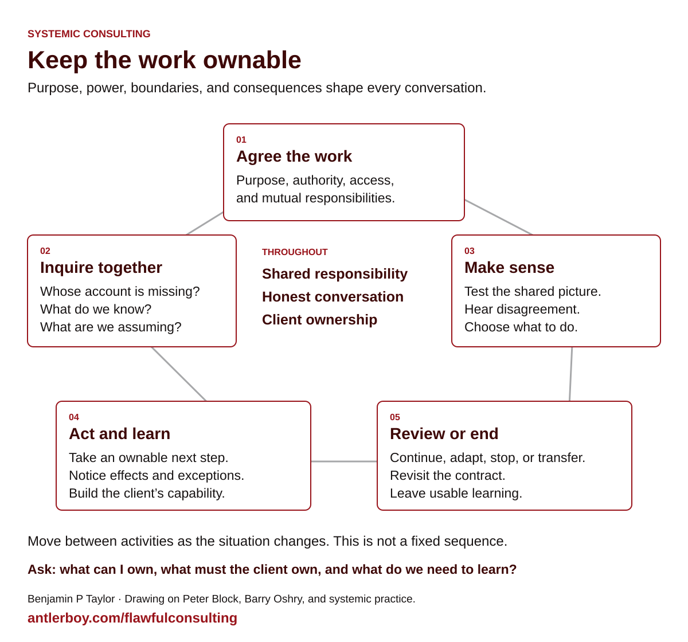

Start with the work in front of you
Consulting begins when someone asks for help. There is a task, a relationship, and a wider situation. How we enter that situation affects what becomes possible. We bring experience and methods; the people we work with bring knowledge, authority, interests, and consequences that we cannot take over.
This guide brings together my consulting teaching and practice from 2022 to 2026, including the slide-free session on 30 September 2026. It draws particularly on Peter Block’s Flawless Consulting, with systems thinking, Barry Oshry’s work on systemic position, and practical work on inquiry and intervention. ‘Flawful consulting’ is a reminder that we bring ourselves, our limits, and our fallibility into the work. The subject here remains systemic consulting.
Use it before a difficult conversation, when scoping an assignment, or to reflect on a piece of work. The chapters develop the ideas; the situations and worksheets help you try them. This is an evolving synthesis of the source material at key-concept level, rather than an archive of every slide.
Choose a way in
The work, in one picture
The relationship runs through the whole assignment. Move between these activities as the situation changes; a new piece of evidence may take you straight back to contracting.


Three ways to use this guide
- Five minutes before a meeting: read the contracting questions and write down what you need from the client.
- Half an hour with a colleague: choose one practice situation, rehearse a conversation, and replay the difficult moment.
- A whole assignment: work through roles, contracting, inquiry, conversations, and intervention. Use the learning contract to keep evidence connected to decisions.
If you were at the September session, the session account will help you reconnect the discussion. If you were not, start with roles: the guide assumes no attendance or prior knowledge.
Find a concept
Search chapter text, headings, and resources.